BatchQC Report
Tests for checking Batch Effects
BatchQC Report
2023-02-15
Summary
Confounding
Number of samples in each Batch and Condition
| Batch 2020_dataset | Batch 2021_dataset | |
|---|---|---|
| Condition 1 | 90 | 180 |
Measures of confounding between Batch and Condition
| Standardized Pearson Correlation Coefficient | Cramer’s V | |
|---|---|---|
| Confounding Coefficients (0=no confounding, 1=complete confounding) | NA | NA |
Variation Analysis
Variation explained by Batch and Condition
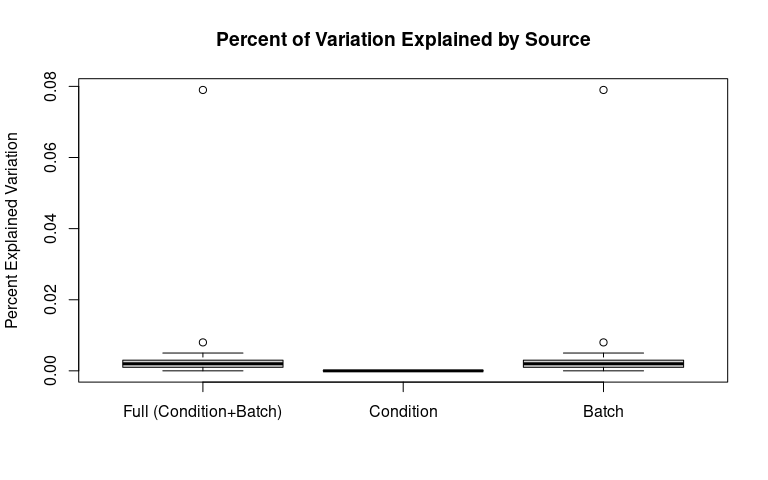
| Full (Condition+Batch) | Condition | Batch | |
|---|---|---|---|
| Min. | 0 | 0 | 0 |
| 1st Qu. | 0.001 | 0 | 0.001 |
| Median | 0.002 | 0 | 0.002 |
| Mean | 0.006158 | 0 | 0.006158 |
| 3rd Qu. | 0.003 | 0 | 0.003 |
| Max. | 0.079 | 0 | 0.079 |
P-value Analysis
Distribution of Batch and Condition Effect p-values Across Genes
| Min. | 1st Qu. | Median | Mean | 3rd Qu. | Max. | Ps<0.05 | |
|---|---|---|---|---|---|---|---|
| Batch P-values | 0.6459 | 0.9292 | 0.9468 | 0.9309 | 0.9577 | 0.9998 | 0 |
| Condition P-values | 1 | 1 | 1 | 1 | 1 | 1 | 0 |
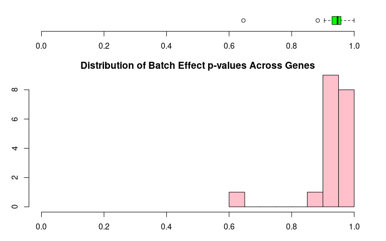

Differential Expression
Expression Plot
Boxplots for all values for each of the samples and are colored by batch membership.
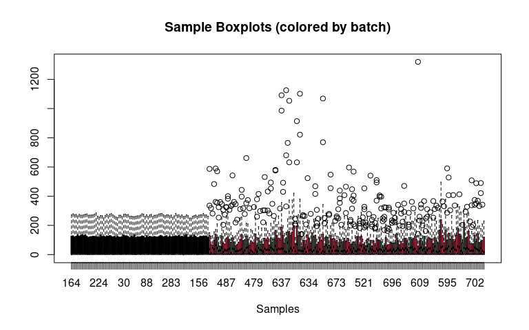
LIMMA
Median Correlations
This plot helps identify outlying samples. 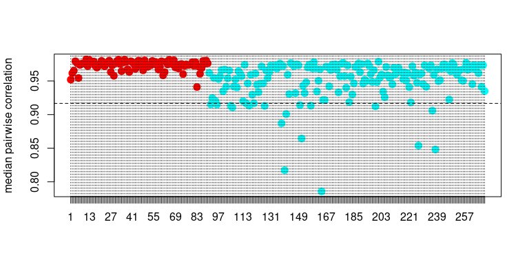
Heatmaps
Heatmap
This is a heatmap of the given data matrix showing the batch effects and variations with different conditions. 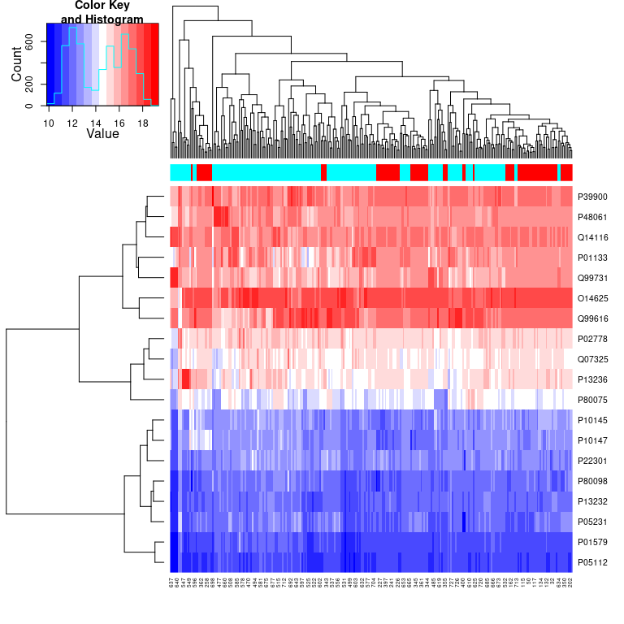
Sample Correlations
This is a heatmap of the correlation between samples. 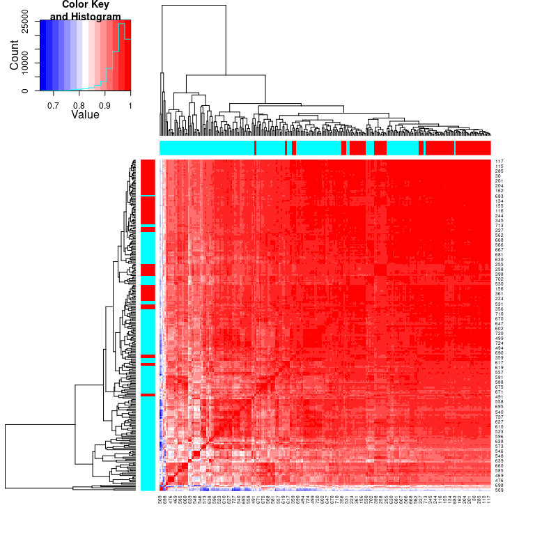
Circular Dendrogram
This is a Circular Dendrogram of the given data matrix colored by batch to show the batch effects. 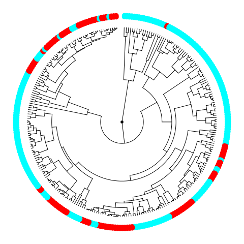
PCA: Principal Component Analysis
PCA
This is a plot of the top two principal components colored by batch to show the batch effects. 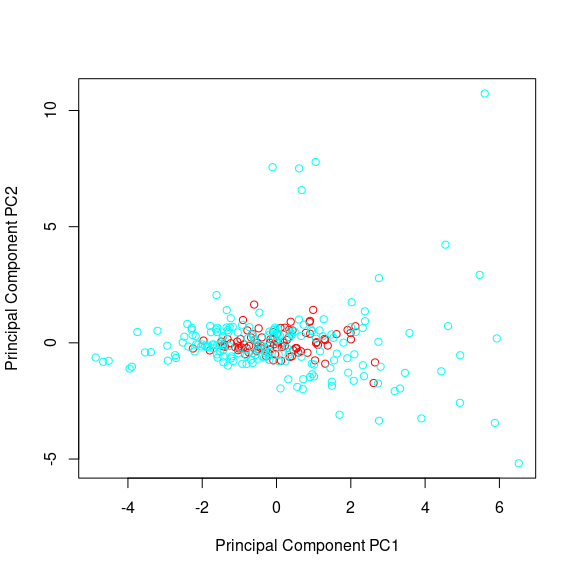
Explained Variation
| Proportion of Variance (%) | Cumulative Proportion of Variance (%) | Percent Variation Explained by Either Condition or Batch | Percent Variation Explained by Condition | Condition Significance (p-value) | Percent Variation Explained by Batch | Batch Significance (p-value) | |
|---|---|---|---|---|---|---|---|
| PC1 | 17.86 | 17.86 | 0 | 0 | 1 | 0 | 0.9906 |
| PC2 | 11.2 | 29.06 | 0 | 0 | 1 | 0 | 0.9937 |
| PC3 | 10.13 | 39.19 | 0 | 0 | 1 | 0 | 0.9257 |
| PC4 | 8.363 | 47.56 | 0 | 0 | 1 | 0 | 0.8971 |
| PC5 | 6.917 | 54.47 | 0 | 0 | 1 | 0 | 0.9674 |
| PC6 | 6.883 | 61.36 | 0 | 0 | 1 | 0 | 0.9238 |
| PC7 | 6.266 | 67.62 | 0 | 0 | 1 | 0 | 0.8878 |
| PC8 | 5.118 | 72.74 | 0 | 0 | 1 | 0 | 0.7748 |
| PC9 | 4.629 | 77.37 | 0 | 0 | 1 | 0 | 0.9633 |
| PC10 | 4.164 | 81.53 | 0 | 0 | 1 | 0 | 0.9825 |
| PC11 | 3.518 | 85.05 | 0 | 0 | 1 | 0 | 0.7684 |
| PC12 | 2.9 | 87.95 | 0 | 0 | 1 | 0 | 0.8262 |
| PC13 | 2.746 | 90.7 | 0 | 0 | 1 | 0 | 0.951 |
| PC14 | 2.463 | 93.16 | 0 | 0 | 1 | 0 | 0.7972 |
| PC15 | 1.939 | 95.1 | 0 | 0 | 1 | 0 | 0.785 |
| PC16 | 1.763 | 96.86 | 0 | 0 | 1 | 0 | 0.9188 |
| PC17 | 1.451 | 98.31 | 0 | 0 | 1 | 0 | 0.9229 |
| PC18 | 1.117 | 99.43 | 0 | 0 | 1 | 0 | 0.9941 |
| PC19 | 0.5704 | 100 | 0 | 0 | 1 | 0 | 0.97 |
Shape
This is a heatmap plot showing the variation of gene expression mean,
variance, skewness and kurtosis between samples grouped by batch to see
the batch effects variation 
## Note: Sample-wise p-value is calculated for the variation across samples on the measure across genes. Gene-wise p-value is calculated for the variation of each gene between batches on the measure across each batch. If the data is quantum normalized, then the Sample-wise measure across genes is same for all samples and Gene-wise p-value is a good measure.Combat Plots
This is a plot showing whether parametric or non-parameteric prior is appropriate for this data. It also shows the Kolmogorov-Smirnov test comparing the parametric and non-parameteric prior distribution.
## Found 2 batches
## Adjusting for 0 covariate(s) or covariate level(s)
## Standardizing Data across genes
## Fitting L/S model and finding priors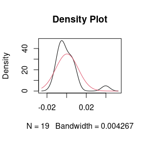 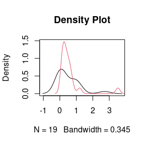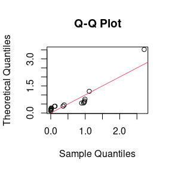
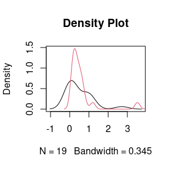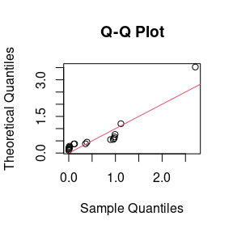
## Batch mean distribution across genes: Normal vs Empirical distribution
## Two-sided Kolmogorov-Smirnov test
## Selected Batch: 1
## Statistic D = 0.1791
## p-value = 0.5187
##
##
## Batch Variance distribution across genes: Inverse Gamma vs Empirical distribution
## Two-sided Kolmogorov-Smirnov test
## Selected Batch: 1
## Statistic D = 0.4737
## p-value = 0.02675Note: The non-parametric version of ComBat takes much longer time to run and we recommend it only when the shape of the non-parametric curve widely differs such as a bimodal or highly skewed distribution. Otherwise, the difference in batch adjustment is very negligible and parametric version is recommended even if p-value of KS test above is significant.SVA
Summary
## Number of Surrogate Variables found in the given data: 2